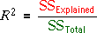
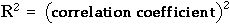
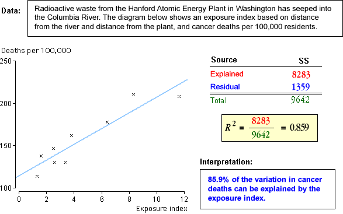

Coefficient of determination
We have seen that the total sum of squares can be split into two parts, the explained and residual sums of squares.
As in the multi-group normal model, a useful summary statistic is the proportion of the total variation that is explained, the coefficient of determination, R2,

The coefficient of determination is always between 0 and 1. R2 is close to 1 when most of the response variation is explained by the explanatory variable; it is close to 0 when most variation is unexplained.
Because the explained and residual sums of squares add to the total sum of squares, the residual sum of squares is a proportion (1 - R2) of the total variation, so this is the proportion of total variation that is unexplained by the normal linear model.
Correlation coefficient
Although it is derived with quite a different aim, the value of R2 is the square of the correlation coefficient between the explanatory and response variables for regression data. This may help to interpret its value.

Illustration
We again consider simulated data that might describe the impurities recorded from batches of plastic produced at different temperatures.
Use the slider to adjust the strength of the relationship, and observe how the value of R2 is affected.
Real data sets
Use the popup menu below to display the coefficient of determination for different data sets and see how it is interpreted.
